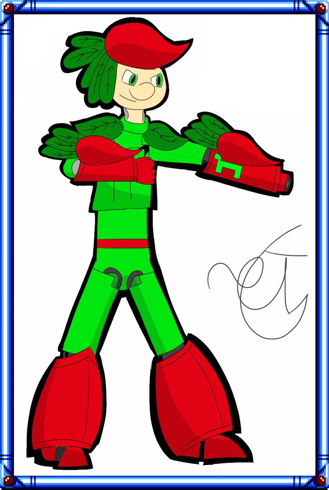
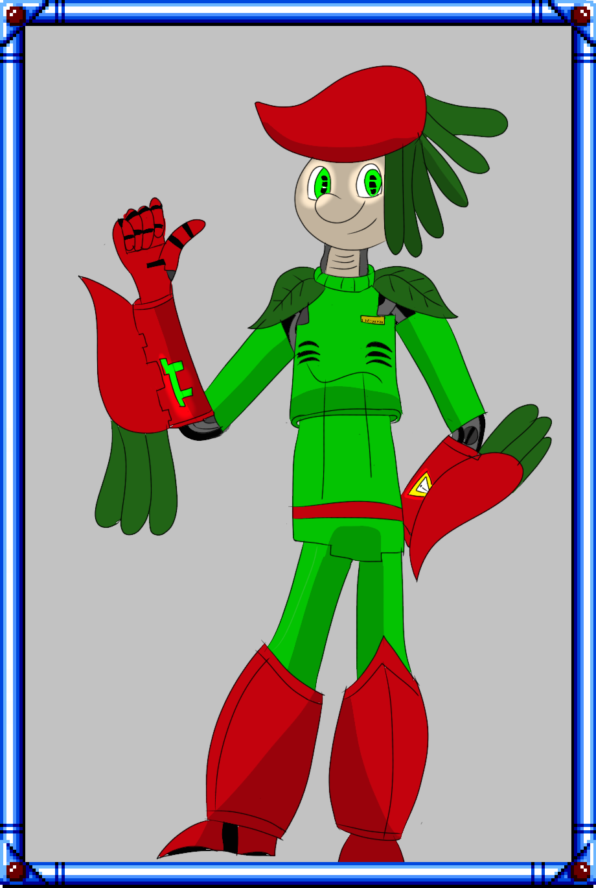

π-man

son Caractère
π-man est souvent porté sur l'humour et n'hésite pas à céder à une blague facile. mais reste toujours efficace au travail

Le travail de π et son rôle dans le groupe
π travaille dans la réduction des déchets, son pouvoir étant de creer de l'acide. Il est capable de produire du Acide fluoroantimonique ses blasters sont donc en Téflon, seul matériel résistant à cet acide de PH-30
Comme son travail n'est pas très chnronophage, il sert souvent de cobaille à son père le Dr Hôbouleau. Il parrait qu'une fois il a échangé son bras avec un blender Apparemment
son autre apparition dans la BD Robot'Ch'tis est dans Colorants et pansements où l'on apprend qu'il peut synthétiser d'autres espèces chimiques